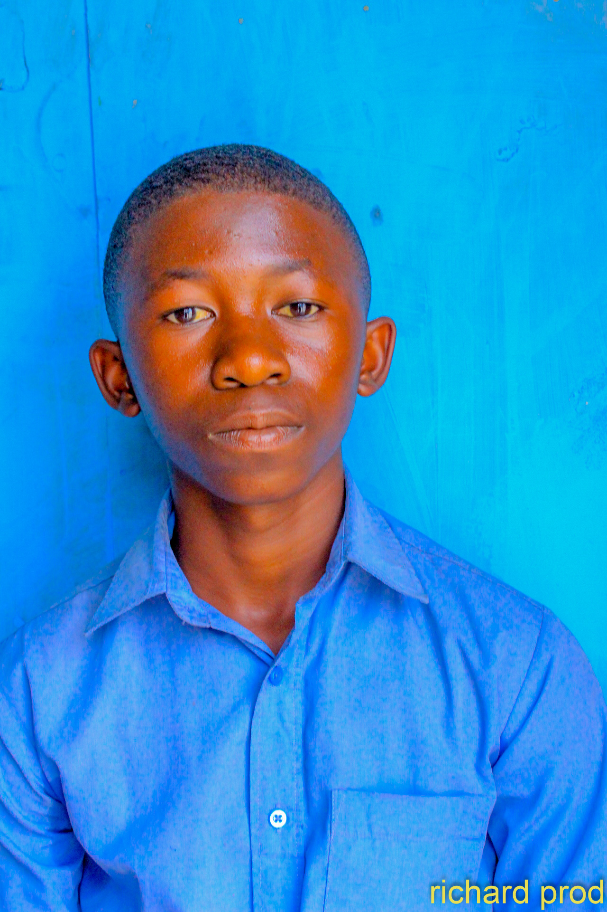
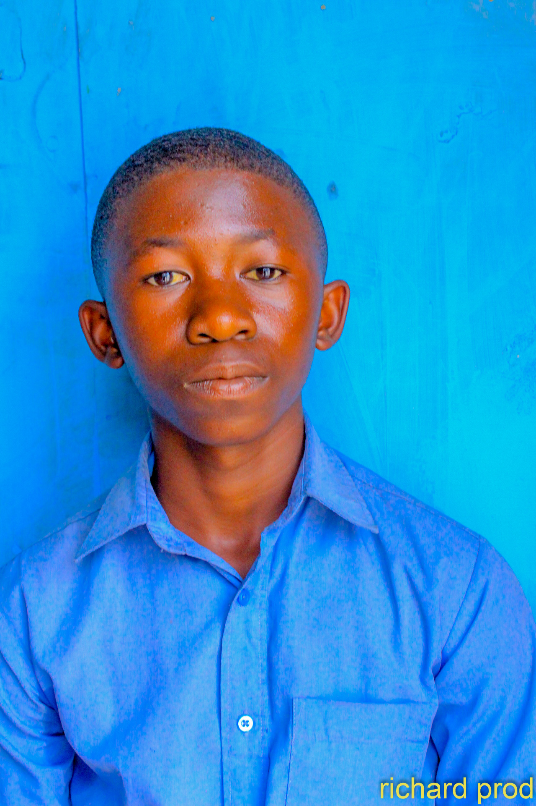

Ma biographie
GENTIL_LE_NOIR MALIYAMUNGU
Bonjour, je m'appelle GENTIL LE NOIR MALIYAMUNGU BALEGAMIRE et je suis Electronicien, Développeur Web et programmeur. Étant Entrepreneur et un Créateur des sites web, depuis ma jeunesse, j'ai toujours été fasciné par la manière dont les technologies transforment notre quotidien, et aujourd'hui, je m'efforce de contribuer à cette transformation à travers mes projets professionnels et personnels. Ce site web est une vitrine de mes passions, de mes compétences et de mes projets. Vous y trouverez des informations sur mon parcours, mes réalisations, ainsi que sur les valeurs qui me guident dans la vie.
Je suis né dans la ville de Goma, une petite ville située au Congo RDC où j'ai grandi avec ma famille. Dès mon enfance, j'ai développé un intérêt particulier pour la technologie et les sciences, toujours curieux de comprendre comment les objets autour de moi fonctionnaient. Mes parents m'ont toujours encouragé à explorer mes passions, et je me suis rapidement orienté vers des activités créatives comme l'informatique, l'électronique, la programmation et la résolution de problèmes sur l'électronique et l'informatique.
J'ai poursuivi mes études à l'Ecole Primaire MATUMAINI, mes études secondaires de base à l'Institut MARANATHA et mes études secondaires humanitaires au Complexe Scolaire adventiste BETHEL où j'ai obtenu mon diplôme d'état en Electronique industriel. Cette période a été déterminante pour moi, car elle a solidifié mon intérêt pour le développement informatique et l'électronique, et m'a permis de découvrir les technologies modernes qui m'inspiraient. Après avoir terminé mes études, j'ai décidé de me lancer dans une carrière en développement web, où j'ai pu appliquer mes connaissances et développer de nouvelles compétences dans un environnement dynamique.
Mon parcours professionnel a commencé comme stagiaire et apprenti dans des petits projets de développement web. Ma préoccupation était vraiment ciblé sur le développement web, sponsorisé par mes grands frères, je me suis fait amoureux à mes études et à mes formations sur l'électronique et le développement web.
Avant de me lancer sur le développement, je fus jetais d'abord concentré sur les études de l'électronique qui m'ont offert les idées de programmer en électronique précisément avec Arduino et RaspBerry pour marier l'électronique que je connaissais au départ avec la programmation que j'apprenais.
Au fur et à mesure, je me suis plongé dans la grande partie de développement web, pour en fin devenir capable de grandir en tant que développeur digne de ce nom.
Après quelques mois, j'ai eu l'opportunité de travailler en tant que grand développeur sur des projets plus complexes, notamment des sites web interactifs et des applications de gestion. C'est à ce moment-là que j'ai découvert ma passion pour la programmation back-end et la gestion de bases de données. En travaillant sur des projets avec des clients, j'ai compris l'importance de bien comprendre les besoins des utilisateurs et d'adapter les solutions en conséquence.
Ma carrière a été marquée par une constante quête d'apprentissage et d'amélioration. J'ai toujours cherché à me tenir à jour sur les dernières tendances du développement web et de la technologie en général, en suivant des formations continues et en expérimentant de nouvelles approches dans mon travail.
Je crois fermement que le succès est le résultat de l'effort constant, de la curiosité et de l'adaptabilité. Pour moi, l'échec n'est pas une fin, mais une opportunité d'apprendre et de se réinventer. Dans tout ce que je fais, je m'efforce d'être intègre, de respecter les autres et de contribuer positivement à la société.
Une de mes valeurs fondamentales est la collaboration. Je suis convaincu que les meilleures idées naissent de la diversité des points de vue et de la coopération entre les individus. Que ce soit au travail ou dans ma vie personnelle, j'essaie toujours de favoriser un environnement de respect mutuel et de partage des connaissances.
Je soutiens également diverses causes sociales, notamment celles liées à l'éducation et à l'accès à la technologie. J'ai eu la chance d'avoir accès à une éducation de qualité, et je crois que chacun devrait avoir la possibilité d'acquérir des compétences qui lui permettront de s'épanouir et de réussir dans la vie.
Une citation qui me guide est celle de *Nelson Mandela* : "Cela semble toujours impossible jusqu'à ce que ce soit fait." Cette citation résume parfaitement ma philosophie de vie : il faut toujours persévérer, même face aux défis les plus difficiles.
Je suis donc un DEVELOPPEUR,PROGRAMMEUR, et ELECTRONICIEN
En résumé, mon parcours a été marqué par une passion pour la technologie, l'apprentissage constant et l'envie de contribuer à des projets significatifs. Ce site est un reflet de mes réalisations, de mes passions et de mes objectifs pour l'avenir. Si vous souhaitez en savoir plus sur mes projets, mes idées ou mes aspirations, n'hésitez pas à me contacter. Je serais ravi de discuter avec vous !
C'est ça le bref de l'histoire de Gentil


 
